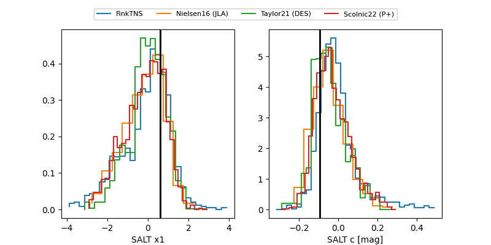

FINK: ZTF25abppbew
Lasair: ZTF25abppbew
ALeRCE: ZTF25abppbew
ZTF25abppbew (ztf,fink)
equatorial (ra, dec) = (274.4935,+11.47986)
galactic (l, b) = (39.5278,+12.57108)

last ztfg=20.02, ztfr=19.50
9 ztfg, 7 ztfr detections